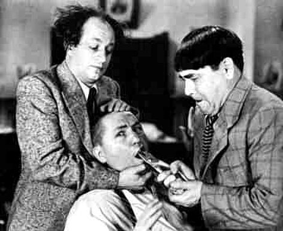

Motivation, History, and Overview

Questions and Answers in ATP
- Axioms
Conjecture with existentially quantified variables,
e.g. ...
- Multiple proofs ... multiple answers (possibly).
e.g. ...
- Applications in CSR, QA systems, user agents, ...
State-of-the-Art wrt ATP
- Otter - old and weak, one answer only
Vampire-SUMO - unsupported, multiple answers
SPASS - seems to have stopped working
SNARK - one answer, ways of getting more
- TPTP standards, e.g. ...
This Work - Multiple Answers from ATP
- Base system (ATP or OAESys) returns single answers
- Iteratively deny previous answers to get more
- Using state-of-the-art ATP systems
- All aspects use TPTP standards